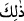

Rabbinin katında kendisi için daha hayırlıdır. (Haram olduğu) size okunanların
dışında kalan hayvanlar size helâl kılındı. O halde, pislikten, putlardan sakının;
yalan sözden sakının.
“Durum böyle.” 26-29. âyetlerde zikredilen iş ve durum böyledir. Bu âyet ise
emredilen ve yasaklanan hükümlere şâmildir. “__WORD__ ve benzeri kelimeler, iki sözü
birbirinden ayırmak ya da bir sözün iki ciheti arasını ayırmak için kullanılır.
“Her kim, Allah’ın emir ve yasaklarına saygı gösterirse, bu, Rabbinin katında
kendisi için daha hayırlıdır.” Yani Allah’ın emir ve yasaklarına saygı göstermek onun
için âhirette sevab cihetinden daha hayırlıdır.
“__WORD__ kelimesi, “__WORD__ kelimesinin çoğuludur. “__WORD__ ihlâli helâl olmayan şeylerdir.
“__WORD__ kendilerine riâyet ve gerekleriyle amel etmenin vâcib/zorunlu olduğunu
bilerek Allah’ın hükümleri, farzları, sünnetleri, Kâbe-i Harâm, Mescid-i Harâm, Beled-
i Harâm, Şehr-i Harâm gibi ihlâli helal olmayan diğer şeylerdir.
Şeyhzâde der ki: “Rabbinin katında” ifâdesi, biriken sevâba delâlet eder. Çünkü
hâsıl olan hayırlar hakkında: “Rabbinin katında” ifâdesi kullanılır.
Âyette işâret vardır ki Allah’ın emir ve yasaklarına saygı göstermekte, Allah’ın
kendisine haram kıldıklarını terk hususunda Allah’ı tâzim vardır. Yine Allah’ın
yapılmasını emrettiği şeyleri terk etmeyi büyük görme anlamını taşır.
Denilir ki: “Kul tâatla cennete, hürmet ile Allah’a ulaşır.” Onun için âyette: “Bu,
Rabbinin katında kendisi için daha hayırlıdır.” buyrulmuştur. Yâni, kul için Allah’a
yaklaşma konusunda hürmeti tâzim/büyük görme, tâat ile yaklaşmaktan daha hayırlıdır.
Denilir ki: “Hizmeti terk etmek cezâyı gerektirir. Hürmeti terk ise firkati/ayrılığı
gerektirir.”
Yine denilir ki: “Allah’ın emirlerine her muhâlefetin afvedilmesi mümkündür. Bu
konuda ümidvar olmanın yolu açıktır. Hürmeti terkte ise Allah’ın bağışlamaması
tehlikesi vardır. Bu ise onun uğursuzluğunun kişiyi dîninin ve tevhîdinin bozulmasına
kadar götürmesiyle olur.
“Leş, kan, domuz eti, … size haram kılındı.” (el-Mâide, 5/3) âyetinde buyrulduğu
üzere haram olduğu “size okunanların dışında kalan hayvanlar size” sizin
menfaatleriniz için “helâl kılındı.”
“el-En‘âm” mutlak olarak sekiz çifttir. Koyun, keçi, deve ve sığırın erkek ve
dişisinden ibârettir. At, katır ve eşekler “el-en‘âm”ın dışındadır.
Bu cümle parantez cümlesidir. Önceki âyetteki yeme ve içme emrini pekiştirmek,
ihrâmın kişiyi avlanmaktan mahrum ettiği gibi, yemek ve içmekten de alıkoyacağı
şeklindeki muhtemel bir vehmi ortadan kaldırmak için getirilmiştir. Yâni Allah size
kitabında istisnâ ettikleri dışında bütün hayvanların etini yemenizi helâl kıldı. Şu halde